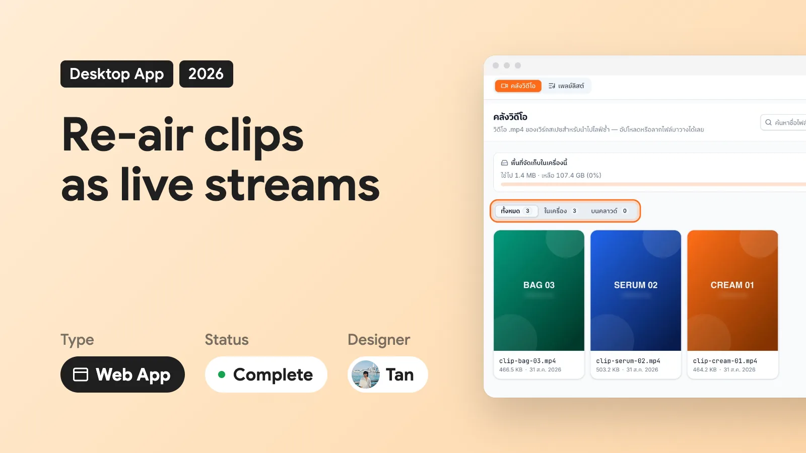
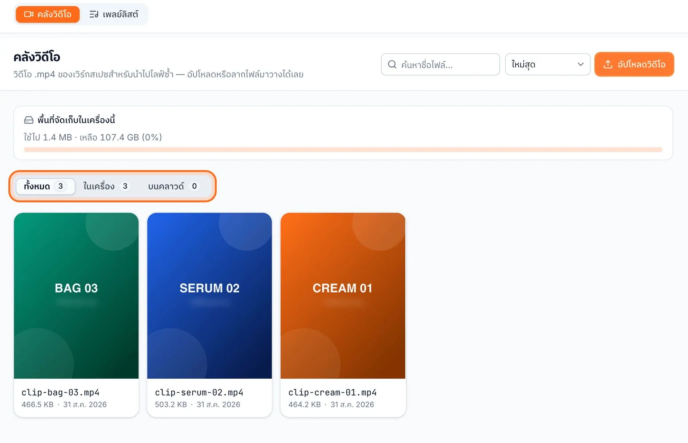
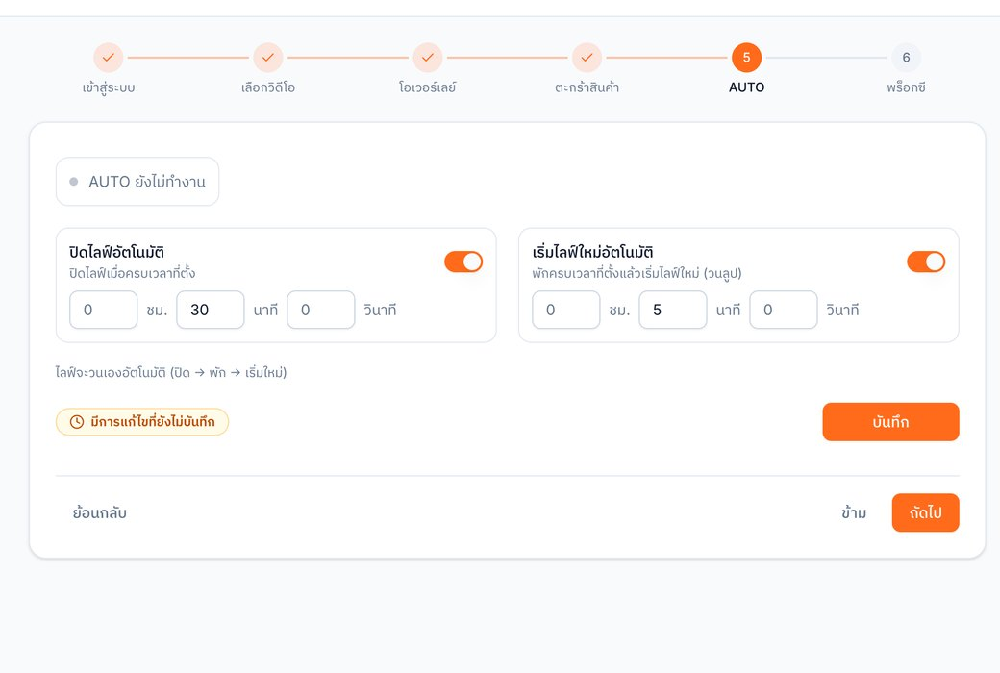
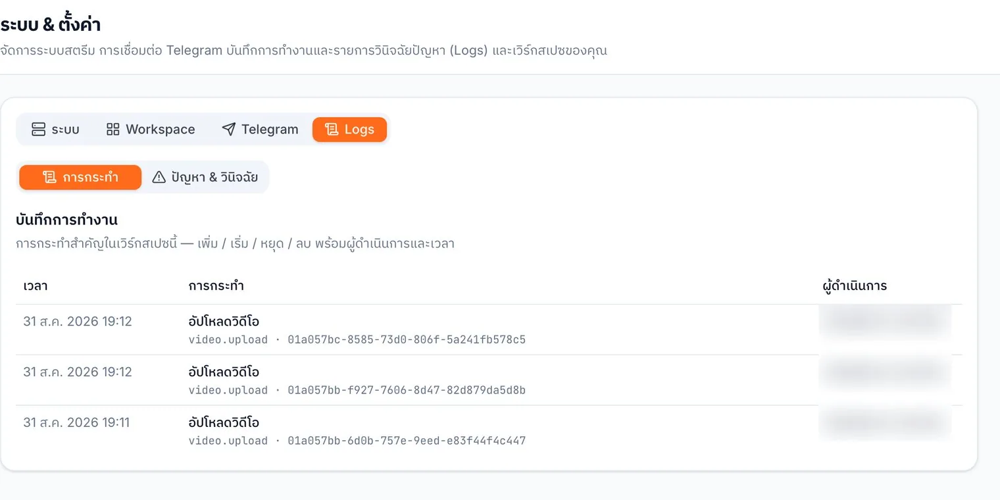
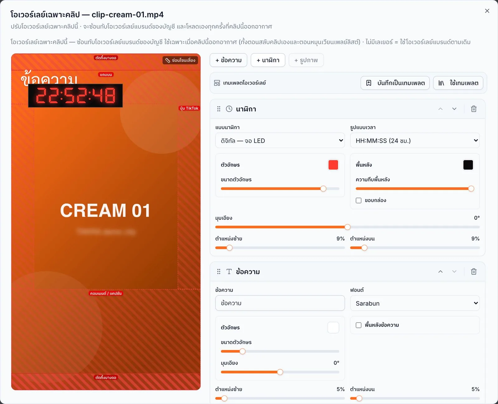
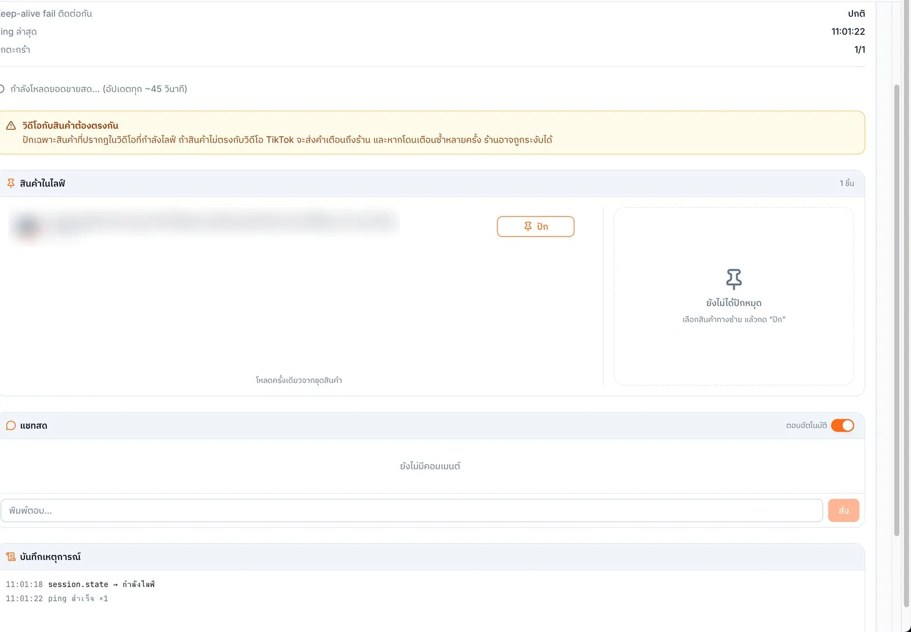
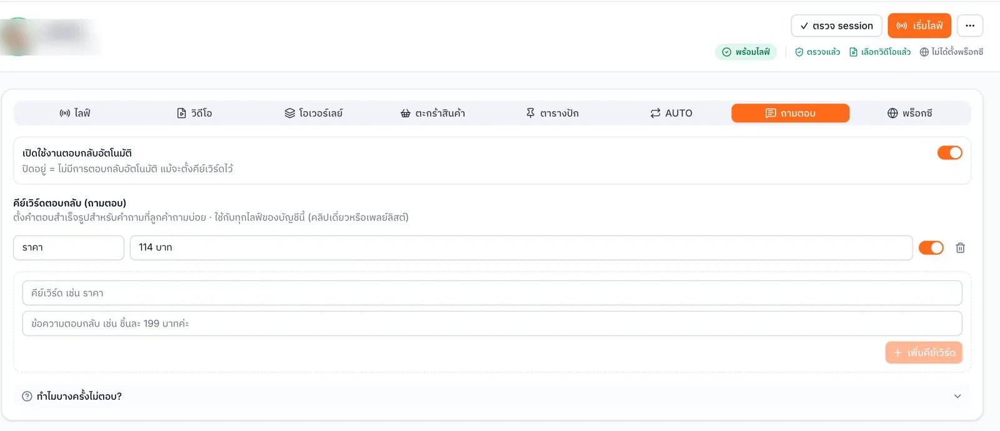

Re-broadcast Control Room
A desktop control room for live commerce that packs a Go backend, an ffmpeg engine and a React SPA into one easy-to-install app. It loops recorded clips out as a stable live stream, with overlays, live chat and automatic product pinning through a browser oracle, and the data never leaves the user's machine.

A desktop app that packs a Go backend + ffmpeg engine + React SPA into a single app. It loops recorded clips out over RTMP as a live stream, with clock/text overlays, live chat, product pinning and multi-account control from one screen, and the data never leaves the machine.
The problem
Live sellers need to be on air almost all the time, but talking live day and night is a path to burnout

Shops that sell through live streams need to stay "on screen" as long as possible to make sales, but nobody can talk live all day, especially on the night shift. The usual setup is OBS + scripts + several VMs wired together by hand. It's fragile and often breaks mid-stream, and with several accounts or rooms at once it gets out of control. The brief: one control room that loops "recorded clips" out as a stable live stream.
Nobody can stream live all day
Sales are tied to airtime, but people have limits, especially late at night. Recorded clips need to be re-aired in a way that still feels close to a real live stream for viewers.
Tooling = hand-wired, fragile, easy to break
OBS + scripts + several VMs wired together, with no central control. When the stream drops, someone has to sit and restart it. No built-in auto-restart or keep-alive.
Many accounts and rooms, no single place to control them
Agencies run several brands at once, and each account needs its own identity and network egress. There was no single screen showing the status of every room.
Audio dropping out or going silent mid-stream
Some looped files have audio shorter than the video, or long silences in the middle, so the stream airs silence without anyone noticing and loses customers for nothing
Some actions the server can't call on its own
Things like chat, product pinning and reading live sales need a "request signature" generated by the platform's JS in a logged-in web page. The backend can't send them directly.
The solution
Bring every piece that used to be wired by hand into one desktop app — open it and it works, no server to set up

A local re-air engine
ffmpeg pushes clips over RTMP with -c copy at native frame rate (no re-encoding unless needed) + keep-alive pings to the room + auto-stop/auto-restart when the stream stalls
Everything packed into one app
Electron wraps the Go backend (spawned as a loopback sidecar), static ffmpeg and the React SPA in one package. Users don't install Docker, Go or Node; install and it runs.
A command center for every room
A single React console shows every session: start/stop the stream, switch clips, set overlays, watch chat and live sales, clearly separated by account
Built-in audio dropout guard
A pre-flight ffprobe check on each file (short audio / no audio) before going live + monitoring for long silences on air, so silence never goes out
A browser oracle as the "signer"
A hidden, logged-in window sends requests from inside the web page so the platform's own JS adds the signature. This unlocks chat, product pinning and GMV that the server can't sign itself.
How it works — 4 steps
From picking a clip to looping it out live with chat and live sales

Prepare the session
Pick clips + set overlay / proxy / the product set to pin
Go live
The backend opens the room + ffmpeg pushes RTMP + keep-alive pings
Oracle listens live
The hidden window decodes chat/GMV → backend → SSE → console
Watch + loop
Audio dropout monitoring + auto-restart keep the stream going to the end
Tech Stack & Architecture
One family of processes on the seller's machine — no cloud app server, no per-shop infrastructure

Electron wrapping a Go sidecar — packs backend + ffmpeg + SPA into one app with zero setup for users, and the window opens on the backend's origin so the OIDC login flow is first-party · SQLite (file: DSN) — desktop mode runs self-contained, migrates on start, no DB server · Go (chi + sqlc) — production shape: no ORM, no inline SQL, multi-tenant with workspace_id from day one · React 19 + Vite + Tailwind v4 — a console the backend serves itself on the same origin
What I built — 8 core capabilities
Taken from a proven POC, then ported to behave the same on a Go / React / Electron stack

Re-air Engine
ffmpeg pushes RTMP with -c copy at native rate + keep-alive pings + auto-stop/restart — the core that loops clips out as a live stream
Overlay Compositor
LED clock / text over the video with filter_complex + live repositioning via ZMQ — re-encodes only sessions that have an overlay
Audio-Drop Guard
Pre-flight ffprobe catches NO_AUDIO/AUDIO_SHORT + runtime silencedetect — no silent airtime
Browser Oracle
A hidden partitioned window per account runs preloaded executeJavaScript so the web page signs requests itself — the shared base that chat, basket and GMV all use
Realtime Chat
The oracle decodes live comments/viewers → /ingest/chat → SSE broker fan-out → console panel (dedup by msgId)
Manual Reply
Replies typed in the UI → in-memory queue → the oracle sends message/chat from the web page → shown only once actually delivered (not optimistic)
Product Pin (basket)
Prepare product sets (product_sets) → go live → pin queue + afterLive hook → the oracle pins automatically, with a "Pinned X/X" status
Per-Account Egress
Network egress per account (utls fingerprint + SOCKS5/HTTP CONNECT) — each identity's traffic is clearly separated
The Session Console
Open a clip → go live → see chat, viewers, sales and overlays together on one screen

| Channel | Live | Details | |
|---|---|---|---|
| Chat | SSE | 42 messages/min · live replies | reply |
| GMV | poll 45s | Live sales · top 5 SKUs | panel |
| Overlay | on | Clock + text · ZMQ move | edit |
ffmpeg -re -i clip.mp4 -c copy -f flv 'rtmp://live.…/app/<stream-key>'
Hacks and problems
6 engineering problems I had to solve myself — desktop runtime + media core + browser automation

Combining 3 processes into one easy-to-install app
The Go backend, ffmpeg and the SPA are separate runtimes. Sellers can't be asked to install each one, so they have to be packaged together with a smooth lifecycle.
spawns the Go binary as a sidecar (loopback) and waits for /healthz 200 before opening the BrowserWindow on the backend's origin, so the OIDC login → callback → cookie flow is entirely first-party · static ffmpeg ships inside the package (electron-builder)Overlays vs. the "no re-encode" rule
The re-air core is locked to -c copy (invariant: no re-encode = constant quality and CPU), but drawing a clock or text has to go through filter_complex, which means re-encoding
libx264 + filtergraph) only for sessions with an overlay — sessions without one stay exactly -c copy · a deliberately narrow decision at the media-core levelA silence detector can't go into a stream-copy
silencedetect is an audio filter (-af), but the main push is -c copy — adding -af directly breaks stream-copy
-af silencedetect -f null -) as a co-goroutine that decodes only the audio and discards it — the main push stays -c copy and the video is untouched · stderr is scanned live instead of reading the whole log fileSome actions need a signature from a logged-in web page
Chat, product pinning and GMV need a request signature generated by the platform's JS in a logged-in page — Go can't sign them itself
session.fromPartition) takes jobs from the backend over validated IPC (sender id + size cap), then calls a preloaded executeJavaScript function (no string-interpolating logic into the remote page) so the web page fetches and signs itself → returns the resultChat and GMV are live data — not every item belongs in the DB
Comments and live sales stream in very fast. Writing every event to the DB = a bottleneck, and there's no need for history across restarts
Per-account credentials must never leak
Each identity's cookies and credentials are the most sensitive secrets — the moment they're stored in plaintext or logged, it's over
length is logged, never the value · desktop↔backend uses a per-machine key (constant-time bearer, loopback only) instead of a hardcoded static keyDeliberate design decisions
A deliberately "narrow" scope — so it's implemented correctly and easy to maintain

The whole system runs on the seller's machine: no central app server, credentials never leave the machine, re-encoding only when there's actually an overlay, and only what must survive a restart goes into the DB. A sharp scope from the start let every feature build on the same re-air core without bloating or slowing it.
Desktop-local
Runs on the seller's machine; data and credentials stay off the cloud
-c copy invariant
Re-encode only for sessions with an overlay
Transient by default
Chat/GMV are live; persist only what needs history
Every secret in the vault
Envelope encryption + log only the length, never the value
Knowledge domains that got stronger
5 areas where my level really moved up from this project

Packaging a native backend as a sidecar, managing its lifecycle (spawn → wait for /healthz → teardown), making OIDC login first-party through a loopback origin, and bundling per-target binaries with electron-builder (dmg/nsis). Lesson: "one app and done" for the user = several runtimes behind the scenes that have to be assembled smoothly.
RTMP push with stream-copy vs re-encode, writing filter_complex overlays, live repositioning via ZMQ, and silence detection with a parallel silencedetect that never touches the main push. Lesson: streaming isn't a black box — knowing when to copy and when to re-encode is how you control both CPU and quality.
chi + sqlc (no ORM, no inline SQL — enforced by tests), goose migrations embedded in the binary, multi-tenant with workspace_id on every query, and an SSE broker for live fan-out. Lesson: setting structural rules (tenant guard, no inline SQL) from day one lets the system grow without breaking.
A partitioned session per account, executeJavaScript calling preloaded functions (no string interpolation into the remote page), and validated IPC (sender id + size cap), along with understanding the tradeoffs of contextIsolation:false. Lesson: safe automation means strictly isolating untrusted contexts and talking only through channels you can verify.
Envelope encryption for every secret, a per-machine key instead of a static backdoor, logging only lengths, and deciding what persists and what's transient at design time. Lesson: good security starts with safe defaults and a sharp scope, not something patched on later.